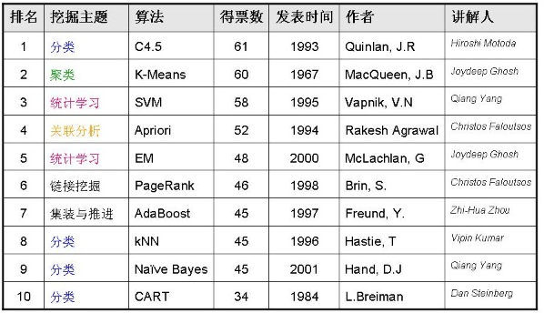

2,020 words in total, 8 minutes required. 2006年12月，国际权威的学术组织the IEEE International Conference on Data Mining (ICDM) 评选出了数据挖掘领域的十大经典算法：C4.5, k-Means, SVM, Apriori, EM, PageRank, AdaBoost, kNN, Naive Bayes, and CART. 投票过程提名 ICDM2006上邀请ACM KDD Innovation Aword 和IEEE ICDM Research Contributions Aword 获奖者参与top 10 大算法的提名。每人各提名10种他认为最重要的算法，同时给出提名该算法的理由，该算法的代表性论文。所提名的算法必须是在该领域被广泛研究和引用的论文 审核 通过Google Scholar对每个提名算法引用进行审核。以此删除名单中引用低于50的论文。最后剩下18种算法。 投票 邀请了： KDD06/ICDM06和SDM06的程序委员会的成员 ACM KDD创新奖和IEEE ICDM研究贡献奖获得者 最后通过投票排名选出Top 10算法。 18个候选者 Classification C4.5 (1993) C4.5: programs for Machine Learning CART(1984) classification and Regression Trees K Nearest Neighbors(KNN) (1996) Discriminant Adaptive Nearest Neighbor Classification Naïve Bayes(2001) Idiot’s Bayes: Not So Stupid After All?Internat Statistical Learning SVM(1995) The Nature of Statistical Learning Theory EM(2000) Finite Mixture Models Association Analysis Apriori(1994) Fast Algorithms for Mining Association Rules FP. Tree(2000) Mining Frequent patterns without candidate generation Link Mining Page Rank(1998) The anatomy of a large-scale hyperlinked environment HITS(1998) Authoritative source in a hyperlinked environment Clustering K-Means(1967) Some methods for classification and analysis of multivariate observations BIRCH(1996) BIRCH: an efficient data clustering method for very large databases Bagging and Boosting AdaBoost(1997) A decision-theoretic generalization of on-line learning and an application to boosting Sequential Patterns GSP(1996) Mining Sequential Patterns: Generalizations and Performance Improvements PrefixSpan(2001) PrefixSpan: Mining Sequential Patterns Efficiently by Projected Pattern Growth Integrated Mining CBA(1998) Integrating classification and association rule miningRough Sets Finding reduct(1992) Rough Sets: Theoretical Aspects of Reasoning about DataGraph Mining gSpan(2002) gSpan: Graph-Based Substructure Pattern Mining 结果Top 10 algorithm in DM 相关文献 Wu, Xindong, and Vipin Kumar. The top ten algorithms in data mining. Vol. 9. Chapman & Hall, 2009. Wu, Xindong, et al. “Top 10 algorithms in data mining.” Knowledge and Information Systems_ 14.1 (2008): 1-37. Top 10 Algorithms in Data Mining (ICDM06 Panel) http://www.tnove.com/?p=209 十大算法简介C4.5C4.5算法是机器学习算法中的一种分类决策树算法,其核心算法是ID3算法. C4.5算法继承了ID3算法的优点，并在以下几方面对ID3算法进行了改进： 1) 用信息增益率来选择属性，克服了用信息增益选择属性时偏向选择取值多的属性的不足；2) 在树构造过程中进行剪枝；3) 能够完成对连续属性的离散化处理；4) 能够对不完整数据进行处理。 C4.5算法有如下优点：产生的分类规则易于理解，准确率较高。其缺点是：在构造树的过程中，需要对数据集进行多次的顺序扫描和排序，因而导致算法的低效。 $### The k-means algorithm 即K-Means算法 k-means algorithm算法是一个聚类算法，把n的对象根据他们的属性分为k个分割，k < n。它与处理混合正态分布的最大期望算法很相似，因为他们都试图找到数据中自然聚类的中心。它假设对象属性来自于空间向量，并且目标是使各个群组内部的均方误差总和最小。 Support vector machines支持向量机，英文为Support Vector Machine，简称SV机（论文中一般简称SVM）。它是一种監督式學習的方法，它广泛的应用于统计分类以及回归分析中。支持向量机将向量映射到一个更高维的空间里，在这个空间里建立有一个最大间隔超平面。在分开数据的超平面的两边建有两个互相平行的超平面。分隔超平面使两个平行超平面的距离最大化。假定平行超平面间的距离或差距越大，分类器的总误差越小。一个极好的指南是C.J.C Burges的《模式识别支持向量机指南》。van der Walt 和 Barnard 将支持向量机和其他分类器进行了比较。 The Apriori algorithmApriori算法是一种最有影响的挖掘布尔关联规则频繁项集的算法。其核心是基于两阶段频集思想的递推算法。该关联规则在分类上属于单维、单层、布尔关联规则。在这里，所有支持度大于最小支持度的项集称为频繁项集，简称频集。 最大期望(EM)算法在统计计算中，最大期望（EM，Expectation–Maximization）算法是在概率（probabilistic）模型中寻找参数最大似然估计的算法，其中概率模型依赖于无法观测的隐藏变量（Latent Variabl）。最大期望经常用在机器学习和计算机视觉的数据集聚（Data Clustering）领域。 PageRankPageRank是Google算法的重要内容。2001年9月被授予美国专利，专利人是Google创始人之一拉里•佩奇（Larry Page）。因此，PageRank里的page不是指网页，而是指佩奇，即这个等级方法是以佩奇来命名的。 PageRank根据网站的外部链接和内部链接的数量和质量俩衡量网站的价值。PageRank背后的概念是，每个到页面的链接都是对该页面的一次投票，被链接的越多，就意味着被其他网站投票越多。这个就是所谓的“链接流行度”——衡量多少人愿意将他们的网站和你的网站挂钩。PageRank这个概念引自学术中一篇论文的被引述的频度——即被别人引述的次数越多，一般判断这篇论文的权威性就越高。 AdaBoostAdaboost是一种迭代算法，其核心思想是针对同一个训练集训练不同的分类器(弱分类器)，然后把这些弱分类器集合起来，构成一个更强的最终分类器 (强分类器)。其算法本身是通过改变数据分布来实现的，它根据每次训练集之中每个样本的分类是否正确，以及上次的总体分类的准确率，来确定每个样本的权值。将修改过权值的新数据集送给下层分类器进行训练，最后将每次训练得到的分类器最后融合起来，作为最后的决策分类器。 kNN: k-nearest neighbor classificationK最近邻(k-Nearest Neighbor，KNN)分类算法，是一个理论上比较成熟的方法，也是最简单的机器学习算法之一。该方法的思路是：如果一个样本在特征空间中的k个最相似(即特征空间中最邻近)的样本中的大多数属于某一个类别，则该样本也属于这个类别。 Naive Bayes在众多的分类模型中，应用最为广泛的两种分类模型是决策树模型(Decision Tree Model)和朴素贝叶斯模型（Naive Bayesian Model，NBC）。 朴素贝叶斯模型发源于古典数学理论，有着坚实的数学基础，以及稳定的分类效率。同时，NBC模型所需估计的参数很少，对缺失数据不太敏感，算法也比较简单。理论上，NBC模型与其他分类方法相比具有最小的误差率。但是实际上并非总是如此，这是因为NBC模型假设属性之间相互独立，这个假设在实际应用中往往是不成立的，这给NBC模型的正确分类带来了一定影响。在属性个数比较多或者属性之间相关性较大时，NBC模型的分类效率比不上决策树模型。而在属性相关性较小时，NBC模型的性能最为良好。 CART: 分类与回归树CART, Classification and Regression Trees。 在分类树下面有两个关键的思想。第一个是关于递归地划分自变量空间的想法；第二个想法是用验证数据进行剪枝。 ← Previous Post Next Post→ To show LiveRe comment, please use JavaScript Table of Contents 1. 投票过程2. 18个候选者3. 结果4. 相关文献5. 十大算法简介5.1. C4.55.2. Support vector machines5.3. The Apriori algorithm5.4. 最大期望(EM)算法5.5. PageRank5.6. AdaBoost5.7. kNN: k-nearest neighbor classification5.8. Naive Bayes5.9. CART: 分类与回归树